Exploring basic annotations of the Human genome
Jun 4 2016 genomeQuick look at the annotations
Genes
In Gencode V19 and focusing on autosomes/X/Y, there are 57783 “genes” of different types:
| type | n |
|---|---|
| protein_coding | 20,332 |
| pseudogene | 13,931 |
| lincRNA | 7,114 |
| antisense | 5,276 |
| miRNA | 3,055 |
| misc_RNA | 2,034 |
| snRNA | 1,916 |
| snoRNA | 1,457 |
| sense_intronic | 742 |
| rRNA | 527 |
| processed_transcript | 515 |
| sense_overlapping | 202 |
| IG_V_pseudogene | 187 |
| IG_V_gene | 138 |
| TR_V_gene | 97 |
| TR_J_gene | 74 |
| polymorphic_pseudogene | 45 |
| IG_D_gene | 37 |
| TR_V_pseudogene | 27 |
| 3prime_overlapping_ncrna | 21 |
| IG_J_gene | 18 |
| IG_C_gene | 14 |
| IG_C_pseudogene | 9 |
| TR_C_gene | 5 |
| TR_J_pseudogene | 4 |
| IG_J_pseudogene | 3 |
| TR_D_gene | 3 |
Exons
In Gencode V19 and focusing on autosomes/X/Y, there are 1196256 “exons” from different types of genes:
| type | n |
|---|---|
| protein_coding | 1,070,764 |
| pseudogene | 39,909 |
| lincRNA | 33,455 |
| antisense | 26,981 |
| processed_transcript | 10,846 |
| miRNA | 3,055 |
| misc_RNA | 2,034 |
| snRNA | 1,916 |
| polymorphic_pseudogene | 1,750 |
| sense_intronic | 1,619 |
| snoRNA | 1,457 |
| sense_overlapping | 834 |
| rRNA | 527 |
| IG_V_pseudogene | 298 |
| IG_V_gene | 284 |
| TR_V_gene | 193 |
| TR_J_gene | 74 |
| IG_C_gene | 60 |
| 3prime_overlapping_ncrna | 54 |
| TR_V_pseudogene | 45 |
| IG_D_gene | 37 |
| TR_C_gene | 19 |
| IG_J_gene | 18 |
| IG_C_pseudogene | 17 |
| TR_J_pseudogene | 4 |
| IG_J_pseudogene | 3 |
| TR_D_gene | 3 |
I focus on exons from protein-coding genes because it’s what we think about most of the time.
Mappability
The mappability track was produced from the UCSC track. The raw file contains, for each base in the genome, an estimation of how likely a read is correctly mapped to this position. Using a sliding-window approach, I computed the average mappability in regions of size 1 Kbp.
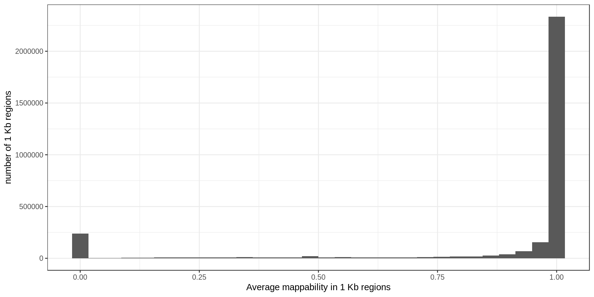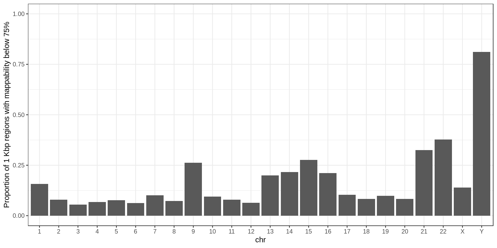
For later use I also define regions of low-mappability as regions with an average mappability below 0.75, which represents 14% of the genome.
Centromere, telomeres and gaps
I group different elements in this class:
| type | n | mean.size.kb |
|---|---|---|
| telomere | 232 | 10.0 |
| clone | 207 | 56.2 |
| contig | 163 | 98.9 |
| centromere | 24 | 3,000.0 |
| heterochromatin | 12 | 6,039.8 |
| short_arm | 5 | 13,432.2 |
Simple repeats
| sequence | n |
|---|---|
| T | 35,301 |
| A | 34,898 |
| AC | 23,317 |
| TG | 19,739 |
| GT | 13,727 |
| AT | 12,311 |
| TA | 11,429 |
| CA | 9,722 |
| AAAT | 6,875 |
| TTTA | 5,345 |
In total there are 962714 annotated simple repeats.
RepeatMasker annotation
There are different classes of repeats in RepeatMasker annotation:
| repClass | n |
|---|---|
| SINE | 1,793,723 |
| LINE | 1,498,690 |
| LTR | 717,656 |
| DNA | 461,751 |
| Simple_repeat | 417,913 |
| Low_complexity | 371,543 |
| Satellite | 9,566 |
| Unknown | 7,036 |
| snRNA | 4,386 |
| Other | 3,733 |
| RC | 2,236 |
| tRNA | 2,002 |
| DNA? | 1,881 |
| rRNA | 1,769 |
| srpRNA | 1,481 |
| scRNA | 1,340 |
| RNA | 729 |
| SINE? | 425 |
| LTR? | 122 |
| Unknown? | 97 |
| LINE? | 51 |
I extract DNA satellites. They are grouped in different families:
| repName | repFamily | n |
|---|---|---|
| BSR/Beta | Satellite | 1,984 |
| (GAATG)n | Satellite | 1,362 |
| ALR/Alpha | centr | 1,301 |
| (CATTC)n | Satellite | 1,096 |
| SST1 | centr | 612 |
| SATR1 | Satellite | 544 |
| HSATII | Satellite | 399 |
| MSR1 | Satellite | 316 |
| SATR2 | Satellite | 262 |
| HSAT5 | Satellite | 260 |
| D20S16 | Satellite | 254 |
| REP522 | telo | 244 |
| GSATII | centr | 190 |
| TAR1 | telo | 161 |
| LSAU | Satellite | 129 |
| HSAT4 | centr | 99 |
| CER | Satellite | 72 |
| GSAT | centr | 67 |
| ACRO1 | acro | 61 |
| GSATX | centr | 56 |
| HSATI | Satellite | 45 |
| SUBTEL_sa | Satellite | 34 |
| HSAT6 | Satellite | 17 |
| SAR | Satellite | 1 |
I also extract transposable elements.
| repFamily | repClass | n |
|---|---|---|
| Alu | SINE | 1,194,734 |
| L1 | LINE | 951,780 |
| MIR | SINE | 595,094 |
| L2 | LINE | 466,438 |
| ERVL-MaLR | LTR | 347,105 |
| hAT-Charlie | DNA | 254,646 |
| ERV1 | LTR | 175,937 |
| ERVL | LTR | 160,346 |
| TcMar-Tigger | DNA | 104,026 |
| CR1 | LINE | 61,303 |
| hAT-Tip100 | DNA | 30,669 |
| hAT-Blackjack | DNA | 19,755 |
| RTE | LINE | 17,874 |
| TcMar-Mariner | DNA | 16,348 |
| hAT | DNA | 12,573 |
| Gypsy | LTR | 10,892 |
| ERVK | LTR | 10,868 |
| TcMar-Tc2 | DNA | 8,156 |
| Gypsy? | LTR | 7,869 |
| Other | Other | 3,733 |
| TcMar? | DNA | 3,424 |
| hAT? | DNA | 3,050 |
| DNA | DNA | 2,744 |
| LTR | LTR | 2,206 |
| PiggyBac | DNA | 2,120 |
| MuDR | DNA | 1,992 |
| TcMar | DNA | 1,950 |
| ERVL? | LTR | 1,854 |
| tRNA | SINE | 1,668 |
| Deu | SINE | 1,265 |
| SINE | SINE | 962 |
| RTE-BovB | LINE | 655 |
| ERV | LTR | 579 |
| Dong-R4 | LINE | 556 |
| PiggyBac? | DNA | 241 |
| L1? | LINE | 84 |
| Merlin | DNA | 57 |
Moreover they are organized in 909 sub-families.
Genes
Size
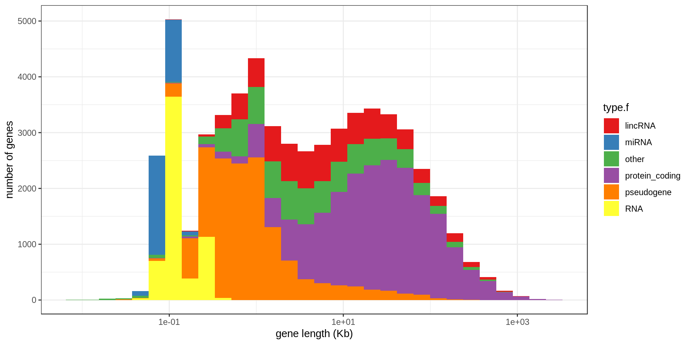
The largest annotated genes are
| chr | name | type.f | size.kb |
|---|---|---|---|
| 7 | CNTNAP2 | protein_coding | 2,304.637 |
| 9 | PTPRD | protein_coding | 2,298.477 |
| X | DMD | protein_coding | 2,241.764 |
| 3 | LSAMP | protein_coding | 2,194.860 |
| 11 | DLG2 | protein_coding | 2,172.911 |
| 8 | CSMD1 | protein_coding | 2,059.619 |
| 20 | MACROD2 | protein_coding | 2,057.827 |
| 6 | EYS | protein_coding | 1,987.242 |
| 2 | LRP1B | protein_coding | 1,900.278 |
| 10 | PCDH15 | protein_coding | 1,825.171 |
The smallest protein-coding annotated genes are
| chr | name | type.f | size.kb |
|---|---|---|---|
| 2 | AC011308.1 | protein_coding | 0.058 |
| 12 | AC055736.1 | protein_coding | 0.065 |
| 16 | PIH1 | protein_coding | 0.092 |
| 2 | AC012360.2 | protein_coding | 0.095 |
| 5 | AC008914.1 | protein_coding | 0.101 |
| 2 | MGC4771 | protein_coding | 0.104 |
| 2 | CATX-2 | protein_coding | 0.110 |
| X | GAGE12B | protein_coding | 0.116 |
| 7 | AC083862.1 | protein_coding | 0.119 |
| 1 | AL606500.1 | protein_coding | 0.123 |
Density
Using non-overlapping windows of 1 Mb the gene density looks like this:
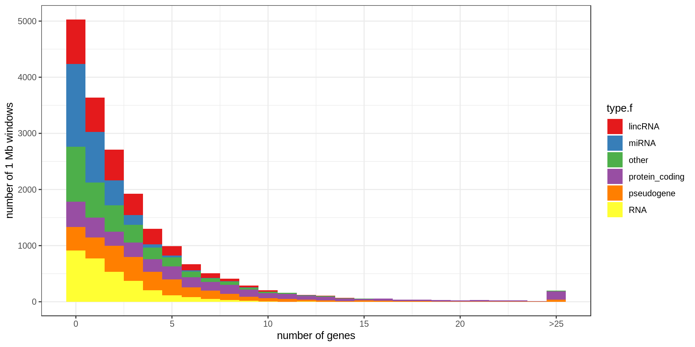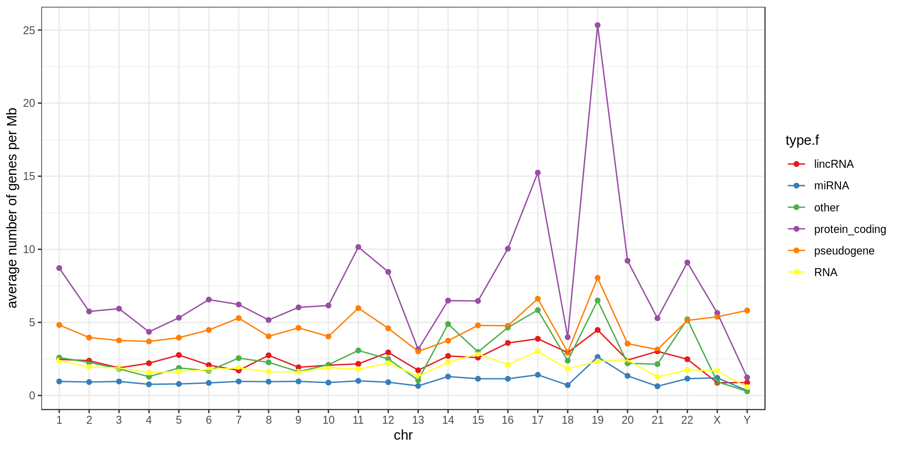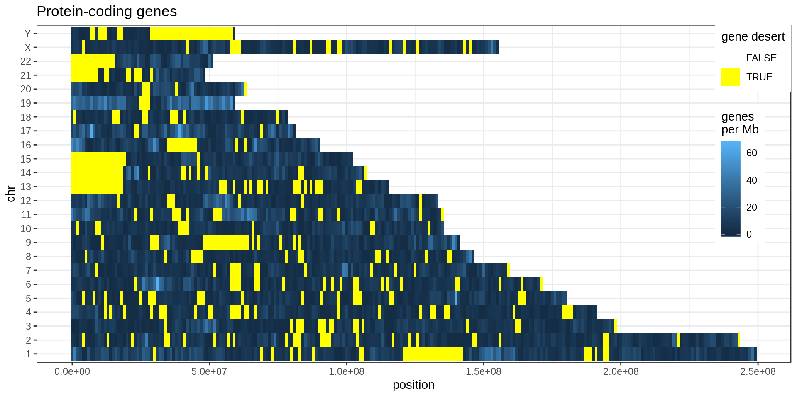
Mappability
Here I compute how many genes overlap regions of low-mappability (defined previously).Also how many genes are within those regions, defined as genes with at least 50% of their body overlapping low-mappability regions.
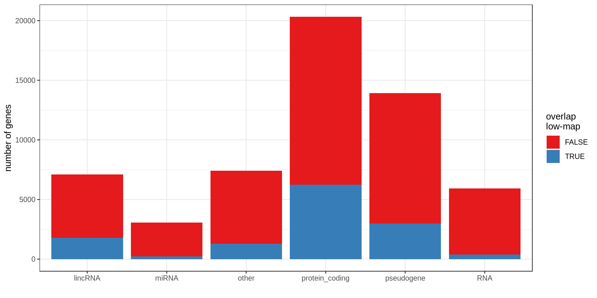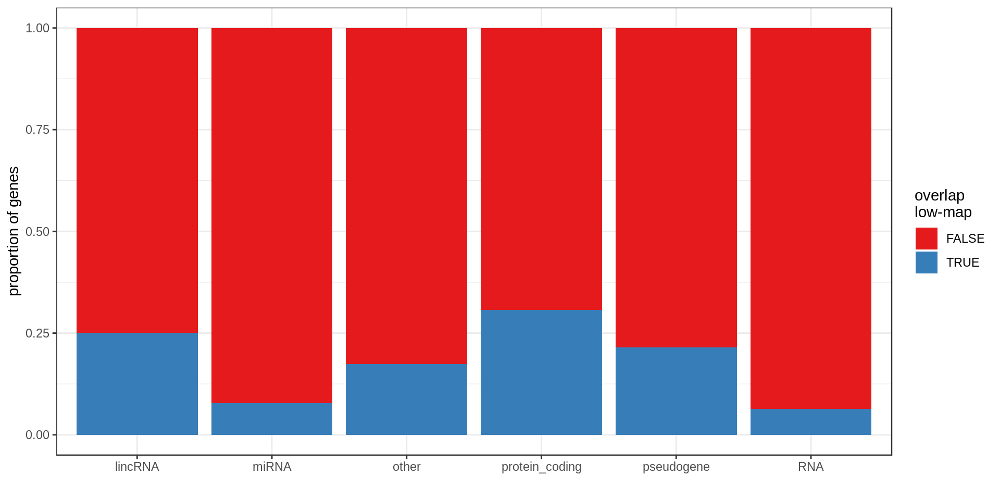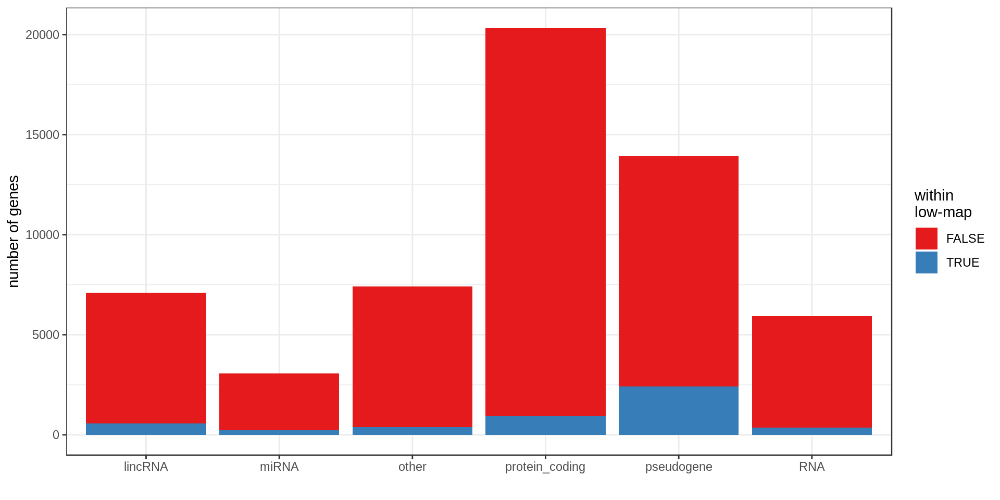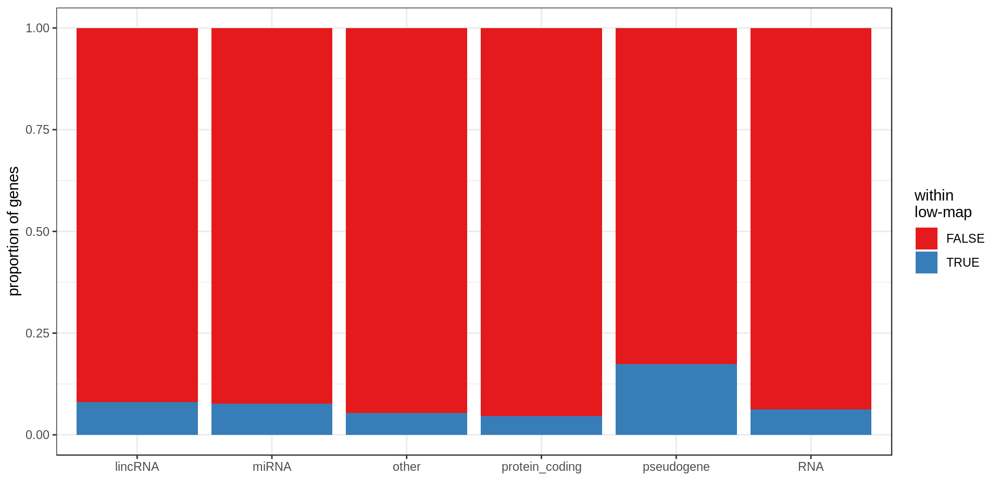
Centromere, telomeres and gaps
As a control, random regions of similar sizes are used.
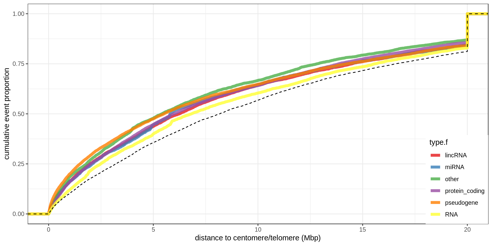
Summary table
| type.f | nb | min.kb | mean.kb | med.kb | max.kb | inLowMap | olLowMap | genePerMb |
|---|---|---|---|---|---|---|---|---|
| protein_coding | 20,332 | 0.06 | 65.35 | 25.70 | 2,304.64 | 0.05 | 0.31 | 6.96 |
| pseudogene | 13,931 | 0.02 | 3.58 | 0.73 | 586.57 | 0.17 | 0.21 | 4.49 |
| other | 7,417 | 0.01 | 20.29 | 3.71 | 1,536.21 | 0.05 | 0.17 | 2.43 |
| lincRNA | 7,114 | 0.09 | 27.98 | 5.69 | 1,375.32 | 0.08 | 0.25 | 2.35 |
| RNA | 5,934 | 0.03 | 0.14 | 0.11 | 0.52 | 0.06 | 0.06 | 1.91 |
| miRNA | 3,055 | 0.04 | 0.09 | 0.08 | 0.19 | 0.08 | 0.08 | 0.98 |
Exons
Size
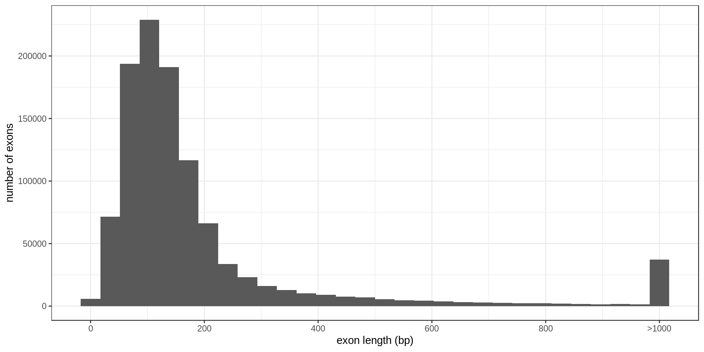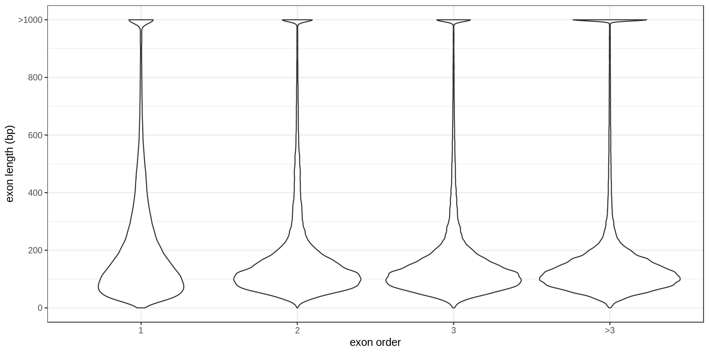
The largest annotated exons are
| chr | name | size.kb |
|---|---|---|
| 8 | TRAPPC9 | 29.059 |
| 5 | MCC | 27.198 |
| 12 | GRIN2B | 24.408 |
| 19 | MUC16 | 21.692 |
| 2 | ABI2 | 20.546 |
| 6 | CNKSR3 | 19.148 |
| 8 | XKR4 | 18.773 |
| 2 | SLC8A1 | 18.359 |
| 11 | AHNAK | 18.169 |
| 21 | KCNJ6 | 18.108 |
The smallest protein-coding annotated exons are
| chr | name | size.kb |
|---|---|---|
| 2 | ALK | 0 |
| 3 | ACAD11 | 0 |
| 4 | PPA2 | 0 |
| 5 | PAM | 0 |
| 5 | GALNT10 | 0 |
| 5 | CYFIP2 | 0 |
| 6 | HDDC2 | 0 |
| 7 | SRRM3 | 0 |
| 11 | AP002884.3 | 0 |
| 12 | YAF2 | 0 |
ToDo: Size per type (first exon, second exon, …)
Density
Using non-overlapping windows of 1 Mb the gene density looks like this:
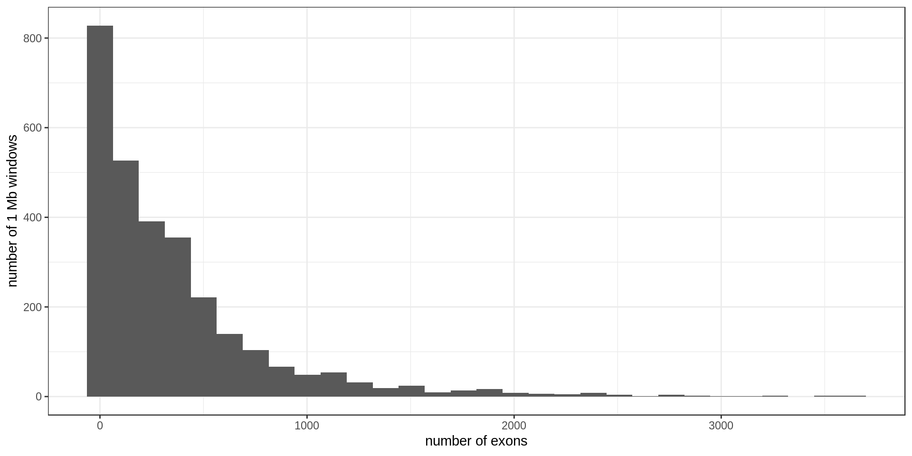
There are, on average, 357.8926476 exons per Mb.
Mappability
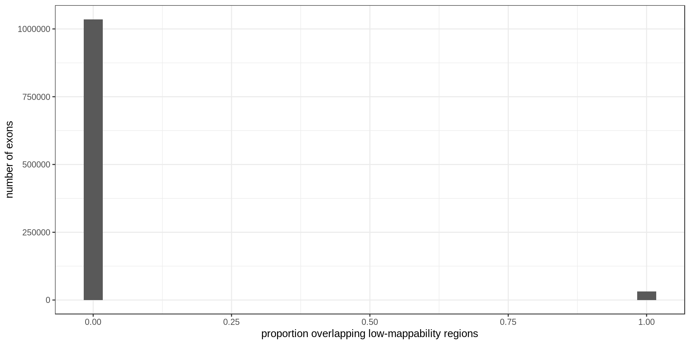
35201 exons overlap low-mappability regions.
Centromere, telomeres and gaps
As a control, random regions of similar sizes are used.
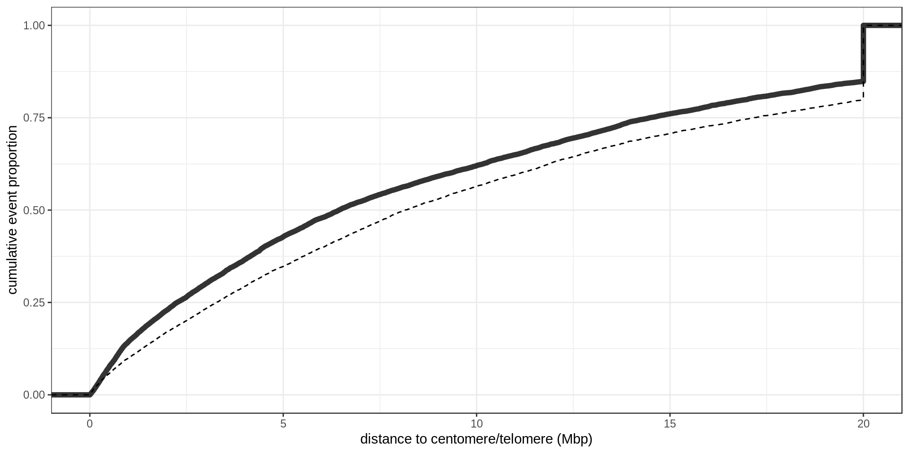
GWAS
Mappability
Density
Using non-overlapping windows of 1 Mb the density of low-mappability regions looks like this:
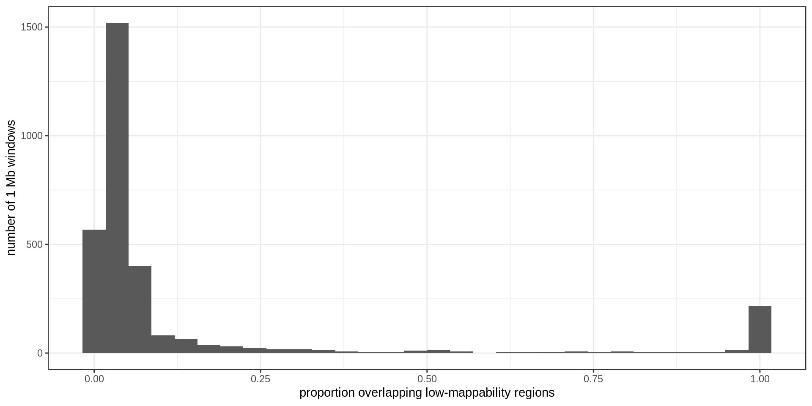
Yellow regions are 1 Mb regions fully annotated as low-mappability.
Segmental duplications
DNA Satellites
Centromeres, telomeres and gaps
Simple repeats
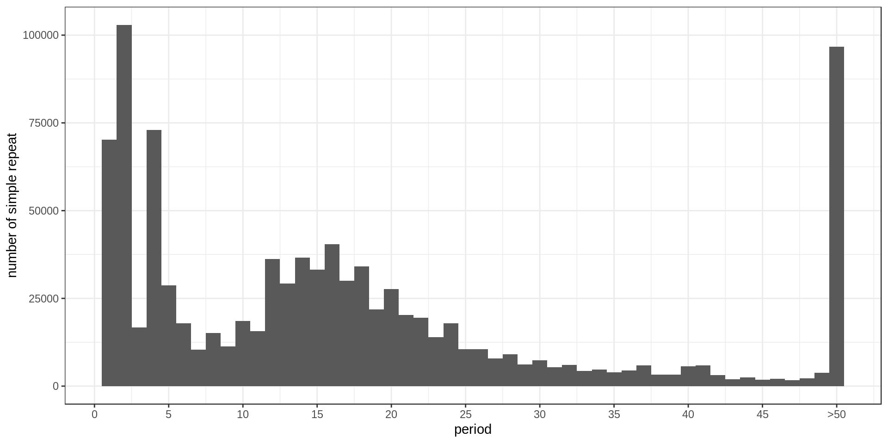 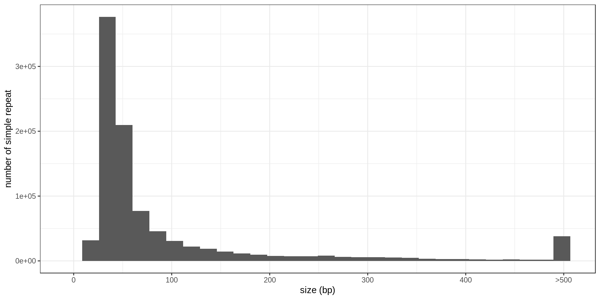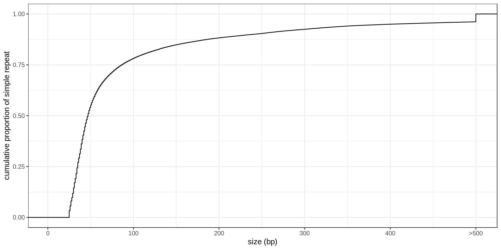
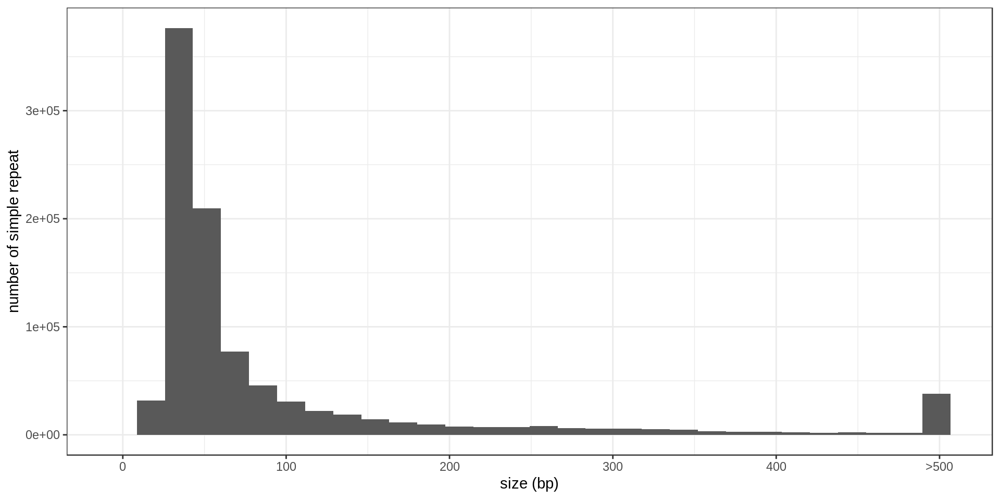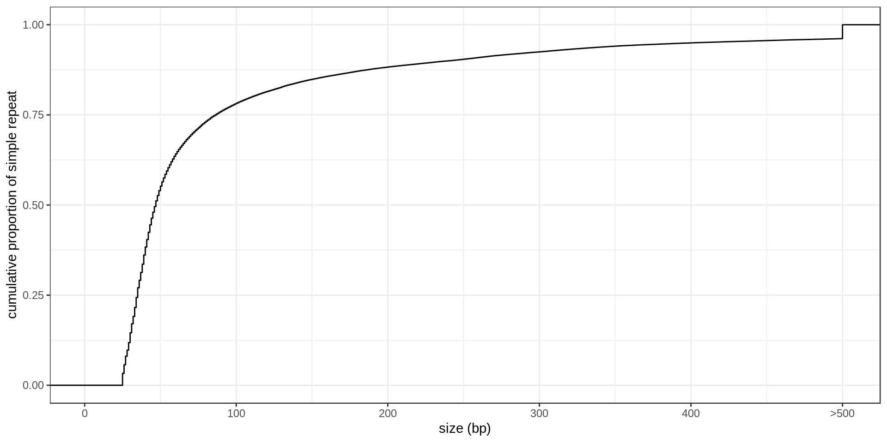
- Interestingly, there is much less STR of period 3 than expected. Why ?
- There is also this burst at copy-number 25. Methodological artifact ?
Grouping the repeats according to their motif, we can ask how frequent is each motif.
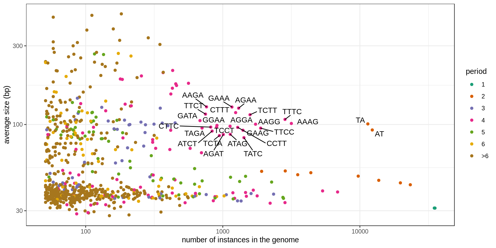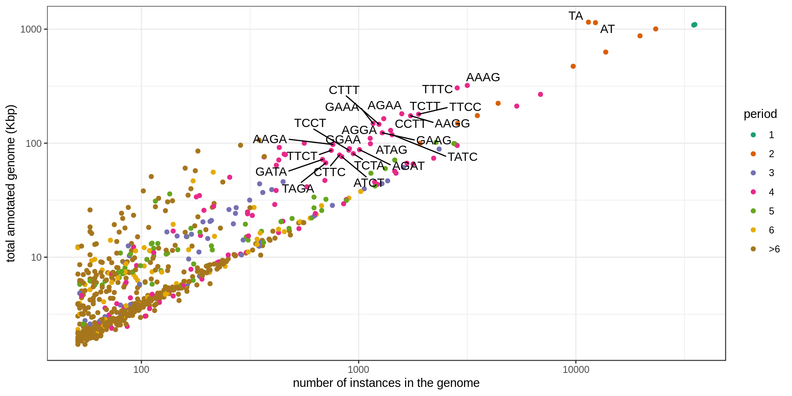
Summary tables
Most numerous STRs:
| sequence | period | n | n.100 | n.400 | n.1k | size.mean | total.kb | period.class |
|---|---|---|---|---|---|---|---|---|
| T | 1 | 35,301 | 5 | 1 | 0 | 31.12 | 1,098.73 | 1 |
| A | 1 | 34,898 | 9 | 0 | 0 | 31.14 | 1,086.68 | 1 |
| AC | 2 | 23,317 | 258 | 70 | 11 | 43.12 | 1,005.36 | 2 |
| TG | 2 | 19,739 | 300 | 75 | 10 | 44.27 | 873.94 | 2 |
| GT | 2 | 13,727 | 240 | 84 | 12 | 45.87 | 629.69 | 2 |
| AT | 2 | 12,311 | 2,747 | 354 | 64 | 92.65 | 1,140.66 | 2 |
| TA | 2 | 11,429 | 2,801 | 377 | 85 | 100.86 | 1,152.69 | 2 |
| CA | 2 | 9,722 | 258 | 78 | 17 | 48.64 | 472.84 | 2 |
| AAAT | 4 | 6,875 | 1 | 0 | 0 | 38.98 | 268.02 | 4 |
| TTTA | 4 | 5,345 | 8 | 0 | 0 | 39.57 | 211.48 | 4 |
Most numerous in term of instances larger than 100 bp:
| sequence | period | n | n.100 | n.400 | n.1k | size.mean | total.kb | period.class |
|---|---|---|---|---|---|---|---|---|
| TA | 2 | 11,429 | 2,801 | 377 | 85 | 100.86 | 1,152.69 | 2 |
| AT | 2 | 12,311 | 2,747 | 354 | 64 | 92.65 | 1,140.66 | 2 |
| AAAG | 4 | 3,163 | 1,272 | 16 | 0 | 101.49 | 321.00 | 4 |
| TTTC | 4 | 2,843 | 1,217 | 34 | 0 | 107.36 | 305.22 | 4 |
| TCTT | 4 | 1,580 | 749 | 11 | 0 | 114.62 | 181.09 | 4 |
| AGAA | 4 | 1,305 | 693 | 15 | 0 | 125.65 | 163.97 | 4 |
| GAAA | 4 | 1,166 | 627 | 12 | 0 | 127.67 | 148.86 | 4 |
| CTTT | 4 | 1,241 | 620 | 2 | 0 | 118.08 | 146.53 | 4 |
| TTCC | 4 | 1,888 | 552 | 21 | 1 | 95.04 | 179.44 | 4 |
| AAGG | 4 | 1,734 | 541 | 35 | 2 | 100.42 | 174.13 | 4 |
Most numerous in term of instances larger than 400 bp:
| sequence | period | n | n.100 | n.400 | n.1k | size.mean | total.kb | period.class |
|---|---|---|---|---|---|---|---|---|
| TA | 2 | 11,429 | 2,801 | 377 | 85 | 100.86 | 1,152.69 | 2 |
| AT | 2 | 12,311 | 2,747 | 354 | 64 | 92.65 | 1,140.66 | 2 |
| GCCTCTGCCCGGCCGCCACCCCGTCTGGGAAGTGAGGAGC | 40 | 182 | 182 | 153 | 0 | 468.81 | 85.32 | >6 |
| TCCCAGACGGGGTGGCGGCCGGGCAGAGACGCTCCTCACT | 40 | 111 | 111 | 98 | 0 | 459.25 | 50.98 | >6 |
| ATATATA | 7 | 348 | 258 | 91 | 15 | 305.88 | 106.45 | >6 |
| GT | 2 | 13,727 | 240 | 84 | 12 | 45.87 | 629.69 | 2 |
| CA | 2 | 9,722 | 258 | 78 | 17 | 48.64 | 472.84 | 2 |
| TG | 2 | 19,739 | 300 | 75 | 10 | 44.27 | 873.94 | 2 |
| TATATAT | 7 | 286 | 209 | 72 | 17 | 335.49 | 95.95 | >6 |
| AC | 2 | 23,317 | 258 | 70 | 11 | 43.12 | 1,005.36 | 2 |
Set of large and numerous STRs (names annotated in the previous graphs):
| sequence | period | n | n.100 | n.400 | n.1k | size.mean | total.kb | period.class |
|---|---|---|---|---|---|---|---|---|
| AT | 2 | 12,311 | 2,747 | 354 | 64 | 92.65 | 1,140.66 | 2 |
| TA | 2 | 11,429 | 2,801 | 377 | 85 | 100.86 | 1,152.69 | 2 |
| AAAG | 4 | 3,163 | 1,272 | 16 | 0 | 101.49 | 321.00 | 4 |
| TTTC | 4 | 2,843 | 1,217 | 34 | 0 | 107.36 | 305.22 | 4 |
| TTCC | 4 | 1,888 | 552 | 21 | 1 | 95.04 | 179.44 | 4 |
| AAGG | 4 | 1,734 | 541 | 35 | 2 | 100.42 | 174.13 | 4 |
| TCTT | 4 | 1,580 | 749 | 11 | 0 | 114.62 | 181.09 | 4 |
| TATC | 4 | 1,426 | 195 | 23 | 6 | 83.24 | 118.70 | 4 |
| CCTT | 4 | 1,404 | 354 | 20 | 0 | 92.31 | 129.60 | 4 |
| AGAA | 4 | 1,305 | 693 | 15 | 0 | 125.65 | 163.97 | 4 |
| GAAG | 4 | 1,284 | 410 | 12 | 0 | 96.08 | 123.36 | 4 |
| CTTT | 4 | 1,241 | 620 | 2 | 0 | 118.08 | 146.53 | 4 |
| GAAA | 4 | 1,166 | 627 | 12 | 0 | 127.67 | 148.86 | 4 |
| ATAG | 4 | 1,133 | 186 | 24 | 8 | 87.22 | 98.82 | 4 |
| AGGA | 4 | 1,130 | 303 | 26 | 2 | 97.65 | 110.35 | 4 |
| AGAT | 4 | 1,009 | 187 | 21 | 0 | 86.98 | 87.76 | 4 |
| TCTA | 4 | 945 | 163 | 18 | 1 | 85.68 | 80.97 | 4 |
| GGAA | 4 | 907 | 270 | 16 | 0 | 98.79 | 89.60 | 4 |
| TCCT | 4 | 901 | 278 | 10 | 0 | 96.36 | 86.82 | 4 |
| ATCT | 4 | 836 | 145 | 19 | 4 | 91.24 | 76.28 | 4 |
| CTTC | 4 | 817 | 246 | 11 | 0 | 96.46 | 78.81 | 4 |
| AAGA | 4 | 761 | 390 | 10 | 0 | 127.96 | 97.38 | 4 |
| TTCT | 4 | 748 | 340 | 10 | 0 | 115.62 | 86.48 | 4 |
| TAGA | 4 | 706 | 118 | 28 | 2 | 95.19 | 67.21 | 4 |
| GATA | 4 | 682 | 137 | 26 | 4 | 105.61 | 72.03 | 4 |
DNA satellites
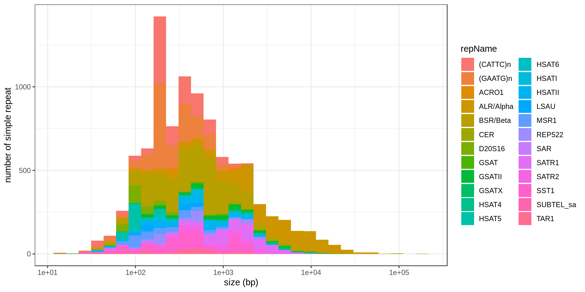
| repName | mean.size |
|---|---|
| SUBTEL_sa | 87.74 |
| HSAT5 | 126.92 |
| D20S16 | 149.57 |
| HSAT6 | 233.24 |
| LSAU | 267.70 |
| MSR1 | 279.90 |
| (GAATG)n | 319.12 |
| (CATTC)n | 332.20 |
| HSATI | 442.89 |
| TAR1 | 554.02 |
| SST1 | 602.01 |
| HSATII | 712.02 |
| REP522 | 712.68 |
| BSR/Beta | 720.22 |
| ACRO1 | 744.80 |
| GSATII | 1,044.12 |
| SATR2 | 1,253.72 |
| SATR1 | 1,696.22 |
| GSATX | 1,834.30 |
| HSAT4 | 2,390.72 |
| GSAT | 3,575.97 |
| SAR | 4,775.00 |
| ALR/Alpha | 5,723.55 |
| CER | 7,535.17 |
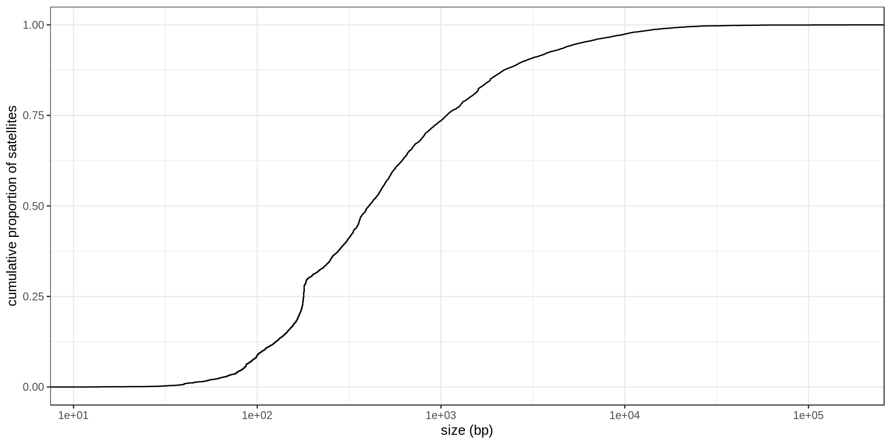
Transposable elements
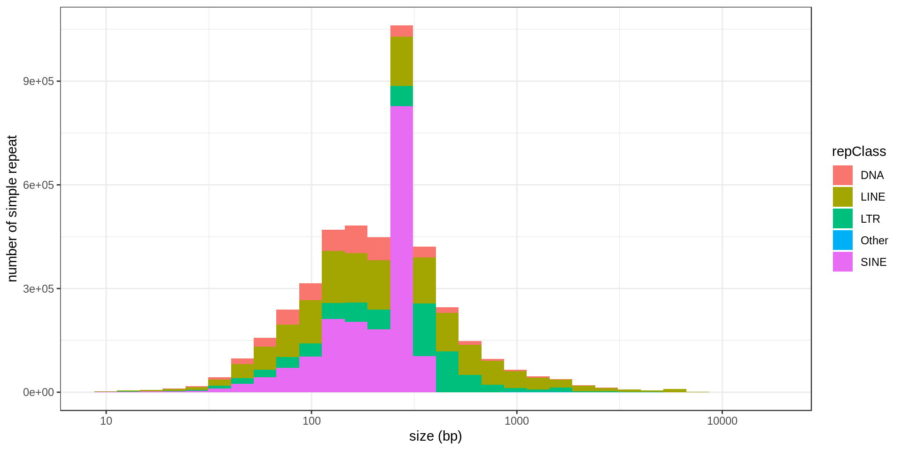